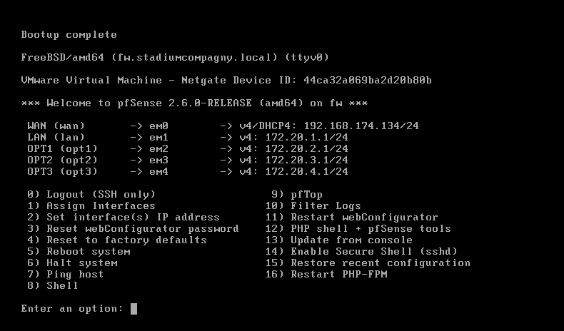
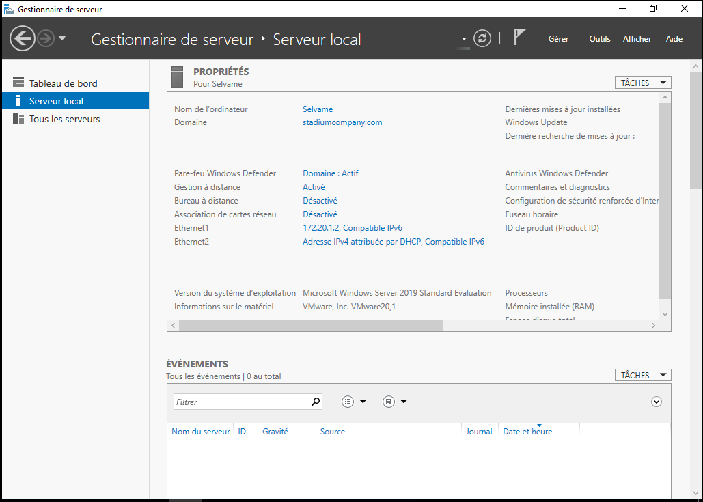
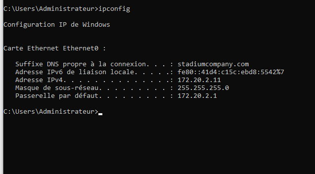
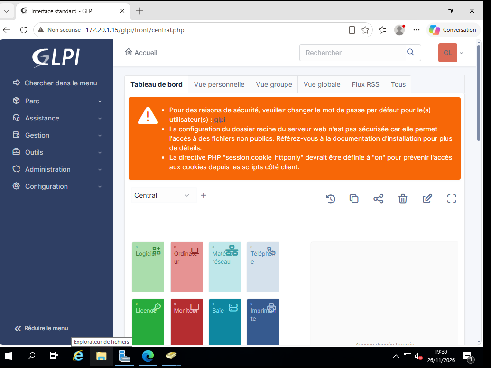

Conception et déploiement d'une infrastructure d'entreprise virtualisée : segmentation par VLAN, pare-feu pfSense, annuaire Active Directory, gestion de parc GLPI / OCS Inventory, répartition de charge et sauvegarde.
Dans le cadre de la préparation à l'épreuve pratique du BTS SIO option SISR, j'ai conçu et déployé l'infrastructure réseau de l'entreprise fictive StadiumCompany. L'ensemble est virtualisé sous VMware Workstation Pro : chaque serveur et chaque poste est une machine virtuelle, et les réseaux sont simulés par des segments LAN VMware.
Le pare-feu pfSense est au centre de l'architecture : il relie Internet (WAN) aux quatre réseaux internes et contrôle tous les flux qui passent de l'un à l'autre.
Schéma logique de l'infrastructure StadiumCompany
| Machine | Système | Rôle | Réseau |
|---|---|---|---|
| pfSense | pfSense 2.6 (FreeBSD) | Pare-feu, routeur, NAT | WAN + 4 VLAN |
| Contrôleur de domaine | Windows Server 2019 | Active Directory, DNS, DHCP | VLAN 10 |
| Serveur GLPI | Debian (Apache2, MariaDB, PHP) | GLPI et OCS Inventory | VLAN 10 |
| Serveur Bacula | Debian | Sauvegarde centralisée | VLAN 10 |
| Poste client | Windows 10 | Poste utilisateur du domaine | VLAN 20 |
| HAProxy | Debian | Répartiteur de charge HTTP | VLAN 40 |
| SRVWEB1 / SRVWEB2 | Debian | Serveurs web frontaux | VLAN 40 |
| Réseau | Zone | Adresse / masque | Passerelle | Équipements |
|---|---|---|---|---|
| WAN | Accès Internet | DHCP VMware (NAT) | Passerelle de l'hôte | Interface WAN de pfSense |
| VLAN 10 | Admin / Serveurs | 172.20.1.0 /24 | 172.20.1.1 | AD/DNS/DHCP : 172.20.1.2 GLPI / OCS : 172.20.1.15 |
| VLAN 20 | Équipes / Utilisateurs | 172.20.2.0 /24 | 172.20.2.1 | Postes clients en DHCP |
| VLAN 30 | Wi-Fi / Invités | 172.20.3.0 /24 | 172.20.3.1 | Terminaux mobiles, isolés du réseau interne |
| VLAN 40 | DMZ | 172.20.4.0 /24 | 172.20.4.1 | HAProxy, serveurs web |
.1 est réservée à la passerelle pfSense, et les serveurs reçoivent une adresse fixe. Les postes utilisateurs sont adressés automatiquement par DHCP.pfSense dispose de cinq cartes réseau : une vers Internet (WAN) et une par réseau interne. Il assure trois fonctions :

| Interface pfSense | Carte | Réseau | Adresse |
|---|---|---|---|
| WAN | em0 | Internet (NAT VMware) | DHCP |
| LAN | em1 | VLAN 10 — Admin | 172.20.1.1/24 |
| OPT1 | em2 | VLAN 20 — Équipes | 172.20.2.1/24 |
| OPT2 | em3 | VLAN 30 — Wi-Fi | 172.20.3.1/24 |
| OPT3 | em4 | VLAN 40 — DMZ | 172.20.4.1/24 |
Le serveur Windows Server 2019 (172.20.1.2) est le contrôleur du domaine stadiumcompany.com. Il centralise :

Le poste Windows 10 est intégré au domaine et placé dans le VLAN 20, celui des utilisateurs, séparé des serveurs. Il obtient automatiquement son adresse, sa passerelle et le suffixe DNS du domaine par DHCP. Les utilisateurs s'y connectent avec leur compte du domaine, authentifié par Kerberos auprès du contrôleur de domaine.

GLPI et OCS Inventory sont installés sur un serveur Debian (172.20.1.15) avec une pile Apache2 / MariaDB / PHP.

| Service | Rôle | Statut |
|---|---|---|
| HAProxy (DMZ) | Répartit les requêtes HTTP entre les deux serveurs web. Si l'un tombe, l'autre continue de répondre. | En cours |
| Bacula | Sauvegarde centralisée des configurations et des bases de données, avec restauration de fichiers. | En cours |
Chaque service a été vérifié par un test documenté : source, destination, résultat attendu et statut.
| Test | Source | Destination | Résultat attendu | Statut |
|---|---|---|---|---|
| Connectivité passerelle | Réseau Admin | pfSense (172.20.1.1) | Réponse au ping | ✓ Validé |
| Accès Internet (NAT) | Réseau Admin | 1.1.1.1 | Sortie via pfSense | ✓ Validé |
| Résolution DNS interne | Poste client | stadiumcompany.com | Réponse 172.20.1.2 | ✓ Validé |
| Authentification domaine | Poste Windows 10 | Contrôleur AD | Ouverture de session du domaine | ✓ Validé |
| Disponibilité web GLPI | Réseau Admin | http://172.20.1.15 | Réponse HTTP 200 | ✓ Validé |
| Attribution DHCP VLAN 20 | Poste client | Serveur DHCP | Adresse en 172.20.2.x | ✓ Validé |
| Cloisonnement inter-VLAN | VLAN 20 / VLAN 30 | VLAN 10 (serveurs) | Flux non autorisés bloqués | À finaliser |